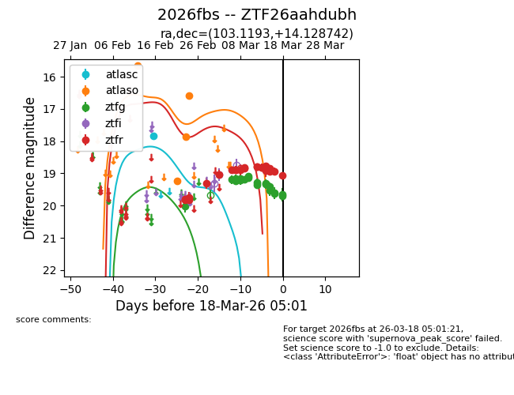
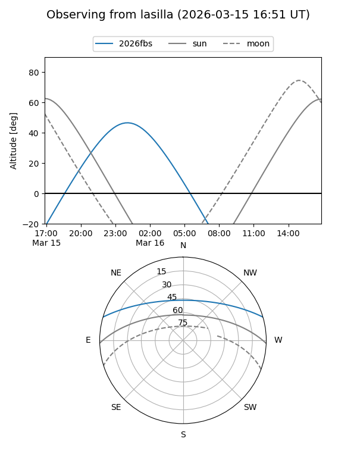
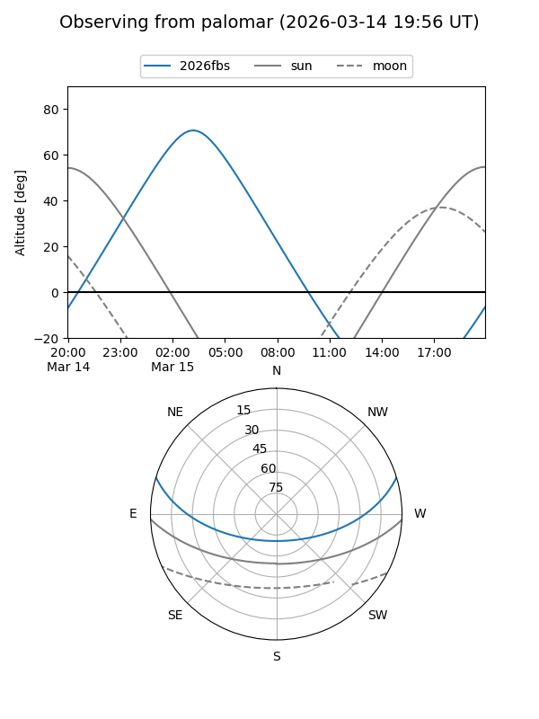
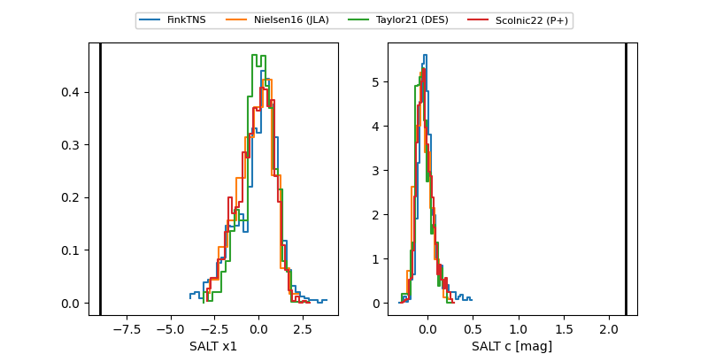

2026fbs
Target 2026fbs at 2026-03-18 05:03
Aliases and brokers:
FINK: link
Lasair: link
ALeRCE: link
TNS: link
YSE: link
alt names
ZTF26aahdubh (ztf,fink_ztf)
2026fbs (tns,yse)
Coordinates:
equatorial (ra, dec) = 103.1193,+14.12874
equatorial (HMS+DMS) = 06:52:28.64,+14:07:43.47
galactic (l, b) = (200.4175,+6.61634)
Flags:
likely cv
Photometry:
last atlasc=17.84, atlaso=16.59, ztfg=19.70, ztfr=19.07
1 atlasc, 4 atlaso, 20 ztfg, 21 ztfr detections
Lightcurve

Visibility


Additional plots
